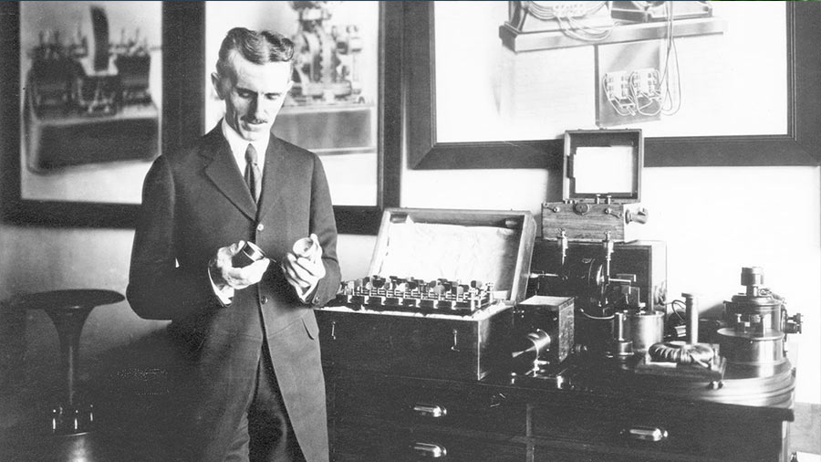

Nikola Tesla
Uno de los grandes genios de la historia de la humanida

se representa aqui a nikola Tesla y una de sus invenciones. Esta imagen fue tomada en 1916
linea de tiempo de la vida de Nikola Tesla
- Nikola Tesla nació el 10 de julio de 1856 en Smiljan, Croacia.
- 1861- asistió a la escuela primaria en Smiljan, donde estudió alemán, aritmética y religión.
- 1870- se trasladó a Karlovac, Croacia, para asistir al Gimnasio Real de Gospic, donde fue influenciado por su profesor de matemáticas Martin Sekulic.
- 1873- Graduado, regresó a su pueblo natal donde poco después de su llegada contrajo el cólera. Estuvo postrado en cama durante nueve meses y cerca de la muerte en varias ocasiones.
- 1874- Nikola Tesla evitó su reclutamiento por el ejército austrohúngaro huyendo a Tomingaj, cerca Gracac.
- 1875- se matriculó gracias a una beca en la Escuela Politécnica de Graz, Austria. Durante su primer año nunca perdió una clase y obtuvo las calificaciones más altas posibles. Al final de su segundo año de estudios perdió su beca y se convirtió en un adicto a los juegos de azar. Durante su tercer año se jugó el dinero de la matrícula.
- 1878- Nunca se graduó en la universidad y en diciembre de este año, dejó Graz y cortó relaciones con su familia tratando de ocultarles el abandono de los estudios.
- 1880 Enero- dos de sus tíos reúnen dinero suficiente para enviarlo a Praga donde tenía intención de estudiar en la universidad, pero por desgracia, llegó demasiado tarde para inscribirse.
- 1881- se trasladó a Budapest para trabajar en Ferenc Puskas donde llegó a ser jefe de electricistas. Durante su empleo, realizó muchas mejoras en el equipo de la estación central y afirmaron haber perfeccionado un teléfono que nunca se patentó.
- 1882- ingresó en la Continental Edison Company en Francia, para diseñar y mejorar equipos eléctricos.
- 1884 junio- se trasladó a la ciudad de Nueva York donde fue contratado por Thomas Edison para trabajar en Edison Machine Works
-
1888- tuvo lugar su primer diseño del sistema
práctico para generar y transmitir corriente alterna para sistemas
de energía eléctrica. Desarrolló el motor de inducción de corriente
alterna, eliminando el conmutador y las escobillas de encendido de
los motores de corriente continua e introdujo mejoras en el campo de
la transmisión y generación de energía de corriente alterna,
constatando que tanto la generación como la transmisión de la misma
se podían obtener de forma bastante más eficaz con una corriente
alterna que en el caso de la corriente continua, la más comúnmente
utilizada en aquella época.
Los derechos de ese invento, trascendental en esa época, fueron comprados por el inventor estadounidense George Westinghouse, que mostró el sistema por primera vez en la World's Columbian Exposition de Chicago (1893). Dos años más tarde los motores de corriente alterna de Tesla se instalaron en el diseño de energía eléctrica de las cataratas del Niágara. - 1893- Nikola Tesla diseñó un sistema de comunicación sin hilos y construyó una antena de más de 30 metros de altura, la Wardencliff Tower, con la que pretendía transmitir energía eléctrica sin hilos, con el mismo principio de funcionamiento que la radio.
- 1898- Patentó más de 700 inventos como un submarino eléctrico y una pequeña nave que captaría energía emitida por la Wardencliff Tower que se almacenaría en sus baterías.
- 1893- antes del primer vuelo de los hermanos Wright, probó un prototipo del primer avión de despegue vertical.
- Nikola Tesla falleció a causa de un infarto agudo de miocardio el 7 de enero de 1943, en la habitación 3327 del New Yorker Hotel, ciudad de Nueva York (Estados Unidos). Su cuerpo fue encontrado después de ignorarse el letrero de "no molestar" que había colocado en la puerta dos días antes.
"La vida es y siempre seguirá siendo una ecuación incapaz de resolver, pero tiene ciertos factores que conocemos"
--Nikola tesla.
Si quieres conocer mas sobre la vida de este gran inventor Entra aqui